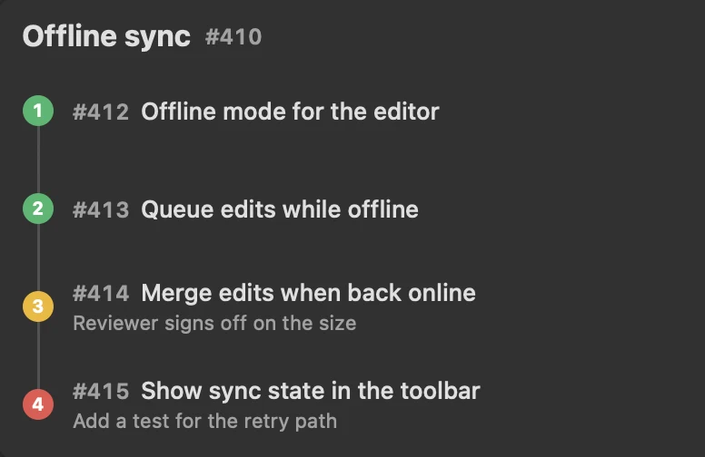
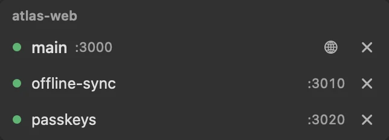
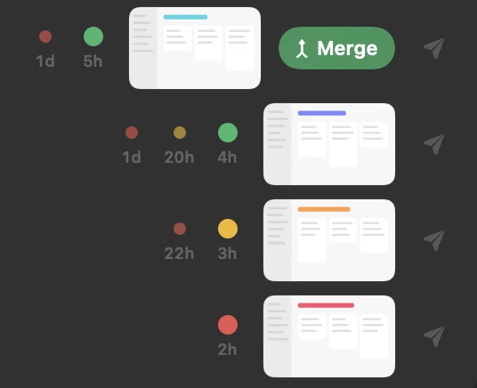
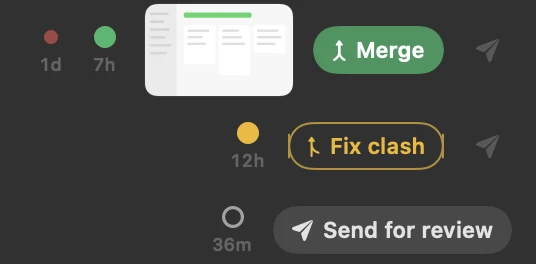

Every open pull request, in merge order

See every open pull request in one small window. Know where each review stands at a glance. Start your dev servers with one click.
Download for Mac


Read the history left to right. Oldest round first, with how long ago it happened. A ring means you pushed and it needs a new look.

Merge, send, fix. Merge when it is approved, send the link to your reviewer in Slack, or fix a changelog clash without leaving the window.
Approved and ready. In a stack, Perch shows which one goes first.
The reviewer has one thing left to decide. You see what it is in a few words.
Changes were asked for. The request sits right under the title.
Perch has nothing to set up on a server. It talks through what is already on your Mac.
Reads your pull requests and merges them, signed in as you.
Sums up each review in a few words and names your groups. Optional.
Sends the link to your reviewer through the Slack app. Optional.
Nothing to sign up for. Open the app, name your repository, done.
Perch has no backend. Your code and reviews never pass through us.
Settings live in the app's preferences, and the Slack token in your Keychain.
Installs to Applications and opens it
The GitHub CLI (gh), signed in. Claude Code and Slack are optional.
It reads each review and sums it up in a few words, and it names your groups. Without it, the color comes from GitHub's own review state.
Through the Slack app on your Mac, as you. macOS asks once for Accessibility permission.
Perch is not notarized yet. If you download the zip, choose Open Anyway once in System Settings, under Privacy & Security. The one-line install skips this.
It lives in your Dock and rests when hidden. Glance, click, back to work.
Download for Mac